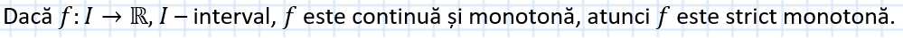
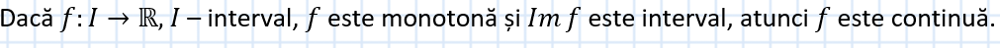
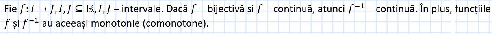

Continuitatea funcțiilor inverse
Continuitatea funcțiilor monotone:
- Teoremă:

Observație:
Teorema rămâne valabilă dacă pretindem ca funcția să aibă proprietatea lui Darboux. Reciproca nu este adevărată.
- Teoremă:

Continuitatea funcțiilor inverse:
